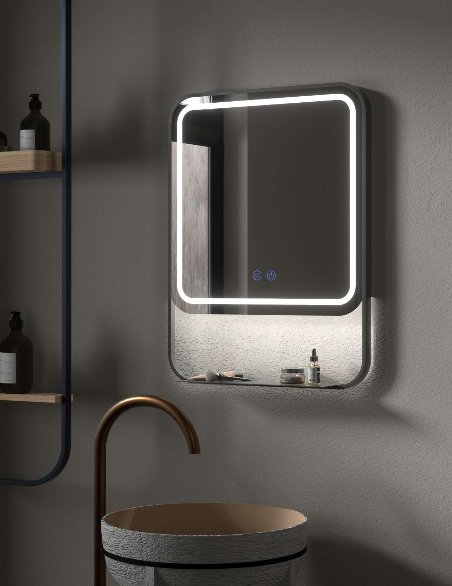

Particuliers
Préparez une rénovation ou une construction : photos, dimensions, références et échantillons pour échanger avec un revendeur.

OPAL · Collections & sélection
Un miroir se choisit avec le meuble, les proportions du mur et la lumière de la pièce. Découvrez les modèles OPAL dans le catalogue interactif et rapprochez leurs dimensions de votre projet.

Comparez les miroirs ronds, rectangulaires ou de forme décorative disponibles au catalogue. Regardez leur largeur par rapport au meuble et la place laissée aux équipements du mur. La référence exacte permet de retrouver les dimensions réellement proposées.
Les visuels aident à comparer un effet lumineux, mais ne remplacent pas la fiche du modèle. Vérifiez les fonctions et les caractéristiques d’éclairage annoncées pour la référence retenue, puis coordonnez l’installation avec votre professionnel.
Conservez le nom du modèle, sa dimension et sa référence. Comparez le miroir avec une composition de salle de bains et transmettez votre choix au revendeur ou à l’agence pour confirmation de disponibilité et de fourniture.
Préparez une rénovation ou une construction : photos, dimensions, références et échantillons pour échanger avec un revendeur.
Négoces, showrooms et artisans : présentez les collections, préparez une sélection et retrouvez les accès professionnels.
Travaillez les associations de matières, préparez les détails d’un projet et transmettez une sélection lisible au professionnel chargé de la fourniture.
Une sélection à concrétiser
Indiquez votre commune, votre activité, les surfaces concernées et les références qui vous intéressent. LE ROY FACTORY est une agence commerciale : l’équipe vous conseille et précise le circuit de fourniture ou le revendeur adapté au projet.